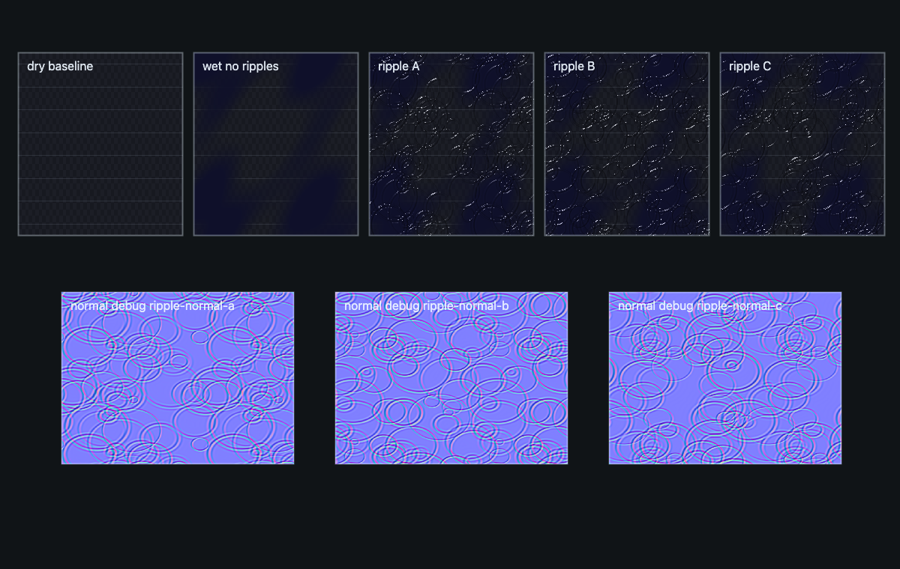
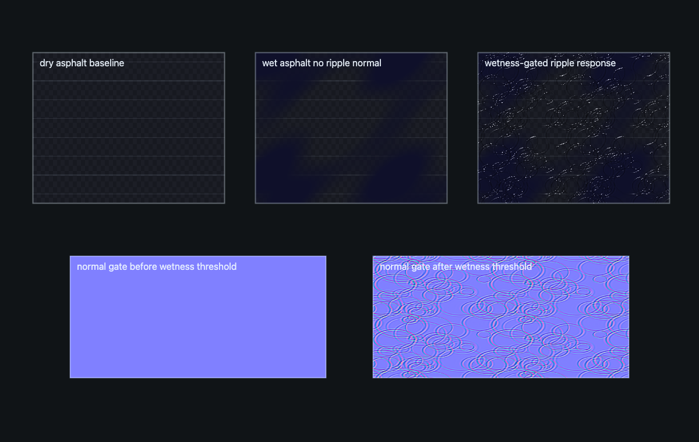
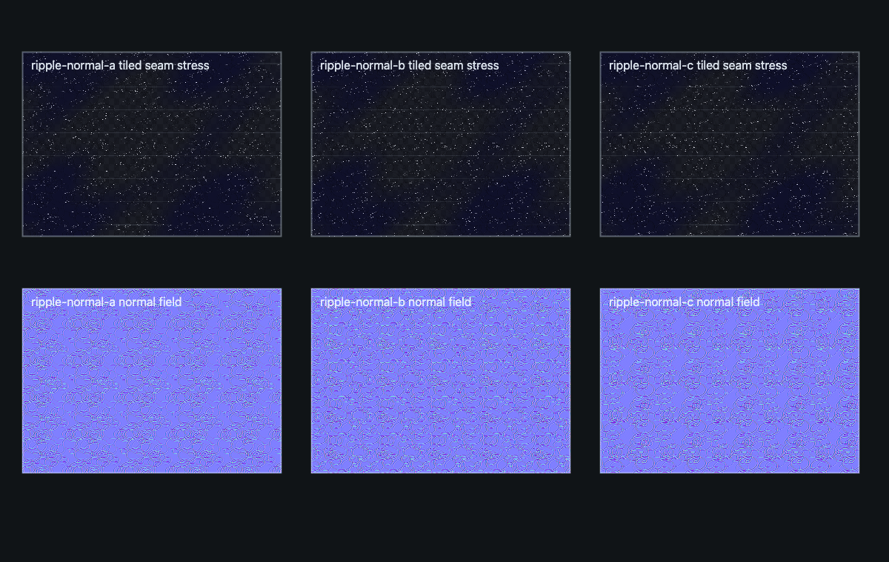

Skill Pack / Worlds and Environments / Rain, Snow, and Wet Surfaces
Build coupled WebGPU/TSL rain, snow, and wet-surface systems in Three.js. Use for compute-driven falling snow, rain streaks, snow accumulation, model snow caps, wet asphalt puddles, procedural or generated ripple normals, splash flipbooks, shared weather envelopes, and surface wetness or coverage transitions.
Evidence frames produced by this skill's validation contract.



Shipped inside the skill folder — each is a working WebGPU/TSL scene or harness you can run and screenshot.
The complete SKILL.md as loaded by agents — verbatim, rendered.
Treat weather as one coupled GPU system: a shared weather envelope drives precipitation particles, surface masks, normals, roughness, residue, lighting, and diagnostics. The first design decision is algorithm class, because a compute/storage architecture can be orders of magnitude faster than per-object or per-frame CPU mutation at the same visual quality.
Run threejs-choose-skills preflight for backend, budget, and resource owner
decisions when precipitation joins a larger scene.
Build new work on latest Three.js with WebGPURenderer from three/webgpu,
TSL from three/tsl, NodeMaterial classes such as
MeshStandardNodeMaterial, MeshPhysicalNodeMaterial, and
SpriteNodeMaterial, and the node post stack with RenderPipeline, pass(),
mrt(), PassNode.setResolutionScale(), outputColorTransform, and
renderOutput().
The highest-throughput architecture for this domain is:
shared weather envelope
-> compute-updated StorageInstancedBufferAttribute precipitation volume
-> camera-wrapped instance positions and per-instance random/static fields
-> TSL surface masks for snow, wetness, puddles, roughness, and normals
-> GPU impact/splash event buffers or generated ripple-normal quality tier
-> node presentation with one tone-map and one output transform owner
Legacy WebGL implementations (deprecated, do not extend): examples/snow-accumulation/snow-system.js, examples/wet-puddle-rain/rain-puddle-system.js.
Canonical Phase 1 WebGPU/TSL contract:
examples/webgpu-rain-snow-and-wet-surfaces/. Run
node examples/webgpu-rain-snow-and-wet-surfaces/validate.js after edits.
Read references/precipitation-surface-systems.md for the full contracts, quality tiers, budgets, diagnostics, and replacement notes.
Initialize the renderer before allocating compute or storage resources. The high tier requires the WebGPU backend; the reduced tiers keep the same weather envelope and switch quality, not implementation doctrine.
await renderer.init();
if (renderer.backend.isWebGPUBackend) {
// High tier: compute/storage precipitation and dynamic surface fields.
} else {
// Reduced tier: fewer instances, static masks, and generated ripple normals.
}
Quality tiers:
high: compute-updated rain or snow positions in storage instanced buffers;
dynamic TSL wetness, snow, puddle, and ripple fields; GPU event buffers for
impact residue when needed.medium: same storage-instanced precipitation with lower counts and cheaper
material field octaves; ripple normals come from preloaded variants in
assets/generated-variants/.reduced: no custom backend rewrite; keep shared weather uniforms, use lower
instance counts or static precipitation, static coverage masks, and generated
ripple-normal variants.renderer.compute() or renderer.computeAsync() into
StorageInstancedBufferAttribute or storage nodes created with
instancedArray().MeshStandardNodeMaterial or
MeshPhysicalNodeMaterial. Drive color, roughness, metalness, normal,
opacity, and displacement through node slots, not string patching.RenderPipeline. Use built-in nodes first: GTAONode or
ao() for contact grounding, BloomNode or bloom() only for bright
splash highlights, TRAANode or traa() when temporal stability matters,
and CSMShadowNode or TileShadowNode for large precipitation-lit scenes.Target these as starting budgets, then tighten for the product scene:
vec4 storage records is about
4.8 MB before alignment and render-target overhead.PassNode.setResolutionScale().SRGBColorSpace.NoColorSpace or linear treatment.HalfFloatType until the tone-map step.outputColorTransform or an explicit renderOutput() node.NodeMaterial classes. This is the current renderer path and keeps material
fields composable.assets/generated-variants/ as the cheap tier.Use $threejs-water-optics for bounded pool simulation, caustics, Fresnel,
refraction, and Beer-Lambert water volumes. Use $threejs-particles-trails-and-effects for
general sparks, plasma, trails, and non-weather particles. Use
$threejs-dynamic-surface-effects for screen-space touch history or frost clearing.
Use $threejs-image-pipeline for full-frame post ownership when precipitation
is part of a larger HDR pipeline. Use $threejs-scalable-real-time-shadows when weather
visibility depends on large-scene shadow budgets. This skill owns
precipitation events and the surfaces they visibly alter.
Weather is one envelope driving many systems: precipitation intensity $\rho_w \in [0,1]$ feeds particles, accumulation, and surface response so they can never disagree. Falling particles integrate gravity with terminal velocity and wind:
$$\mathbf v_{t+dt} = \mathbf v_t + \big(\mathbf g - k\,\mathbf v_t + \mathbf w(t)\big)\,dt$$Wetness darkens albedo and sharpens specular response — a wet material interpolates:
$$\alpha' = \operatorname{lerp}(\alpha, \alpha_{wet}, w), \qquad c' = c\,(1 - 0.3\,w), \qquad F_0' = \operatorname{lerp}(F_0, 0.02\text{–}0.04, w_{film})$$Snow accumulates by up-facing exposure $s = \operatorname{smoothstep}(c_0, c_1, \mathbf n\cdot\hat{\mathbf u})\cdot\rho_s$, and puddles fill height-field basins from the bottom up. Ripple normals advance phase per ring: $h(r,t) = A\,e^{-\gamma t}\cos(kr - \omega t)$, baked or generated as normal variants.